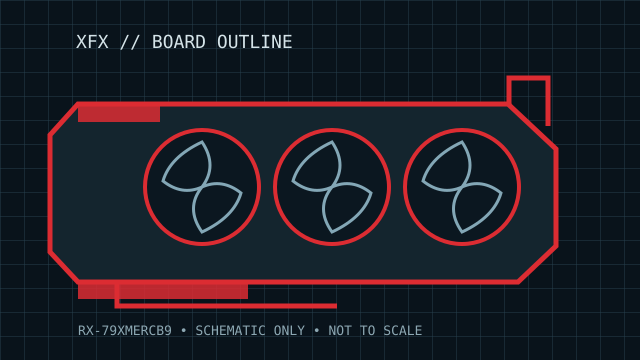

[ BOARD-PARTNER GRAPHICS // IDENTIFIED COMPONENT ]
XFX Speedster MERC 310 Radeon RX 7900 XTX Black Edition 24 GB
Navi 31 XTX / RDNA 3 (2022). This record describes the named add-in-board variant and its published configuration, not every RX 7900 XTX/XT board. Verify its exact product label, revision and manufacturer document before installation or service.

MODEL / SKU: RX-79XMERCB9 — Speedster MERC 310 Black Edition 24 GB GDDR6. Board-partner clocks, PCB, cooling, output bracket and BIOS are distinct from AMD's reference design.
Recorded board specifications
| Cataloged board / exact SKU | XFX Speedster MERC 310 Black Edition 24 GB GDDR6; RX-79XMERCB9. |
|---|---|
| GPU / architecture / launch | Navi 31 XTX / RDNA 3 (2022); Navi 31-family GPU. |
| GPU resources | 6,144 stream processors; product clocks are factory/BIOS-profile dependent and are intentionally not generalized across revisions. |
| Memory / bus | 24 GB GDDR6 at 20 Gb/s on a 384-bit interface (960 GB/s raw bandwidth); 96 MB Infinity Cache. |
| Host interface | PCI Express 4.0 x16 physical/electrical board interface. Link speed and lane operation depend on host, firmware, slot wiring and negotiated link. |
| Board power / auxiliary input | AMD reference RX 7900 XTX board power is 355 W. XFX lists three 8-pin PCIe power connectors; this product page does not identify an independent TBP for every BIOS/revision, so use XFX PSU guidance for the exact card. |
| Dimensions / cooler envelope | 344 × 128 × 57 mm (length × height × thickness), approximately 3-slot cooler. Allow additional chassis and cable clearance; dimensions are the partner listing, not a guarantee for every production revision. |
| Display outputs | 3 × DisplayPort 2.1 and 1 × HDMI 2.1. Output versions, simultaneous-display limits and supported modes depend on firmware, driver, cables and display. |
| Revision / fit caveat | XFX RX-79XMERCB9 is the Black Edition. MERC 310 variants and regional SKUs can differ in factory clocks, BIOS, cooler or bundled support; verify the card label and current XFX specification. |
Compatibility, service & revision notes
Check the model/SKU suffix and PCB or cooler revision against the card label before purchasing power leads, a replacement cooler or a firmware image. Fit is governed by measured card length, height, thickness, adjacent-slot obstruction, case structure and power-lead bend space—not by the slot count alone. Partner power limits and factory overclock profiles may differ from AMD reference specifications.
- Use the power connectors and PSU capacity in the exact partner manual; fully seat the plugs and do not adapt or force damaged connectors.
- Record serial/part labels, subsystem ID, BIOS switch position, driver version and physical condition. Do not flash a ROM unless it explicitly matches the board revision and subsystem.
- Confirm the supported OS/driver branch and display-output capability for the intended platform; link generation negotiates with the host but does not resolve firmware or power incompatibility.
Manufacturer & product sources
- XFX Speedster MERC 310 RX 7900 XTX Black Edition product pageBoard-partner product/specification page for the identified family; verify the exact SKU suffix and any revision-specific downloads before service.
- AMD Radeon RX 7900 XTX product specificationsAMD GPU-family/reference information for processor resources and baseline platform requirements; not a substitute for the named add-in-board specification.
Static archive record. Physical card label, current partner manual and revision-matched product page take precedence when they conflict with this summary.